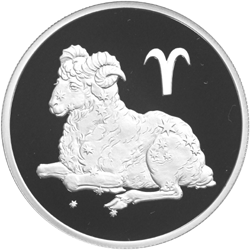

Məlumatlar
Qoç bürcü 20 mart – 21 aprel Tropik astrologiya sisteminə görə Günəş orta hesabla 21 martda baş verən mart ekinoksuna çatdıqda Qoç bürcünə girir. Yer kürəsinin Günəşin ətrafında dövr etməsi təxminən 365,24 gün çəkdiyindən, ekinoksun dəqiq vaxtı hər il eyni deyil. Bir sıçrayış ilinin 29 fevralı, həmin ilin mart ekinoksunun əvvəlki ilə nisbətən təqvimə görə on səkkiz saat əvvəl olmasına səbəb olur.
Xarakteri
- Ağıllı
- Cəld
- Səmimi
- Özündən razı
Maraqlı Məlumatlar
Qoç bürcündən olanlarla ilk tanış olduqda intellektual söhbətlərdən başlasanız yaxşıdır. Söhbətə Qoçun başlaması məqsədə uyğundur. Sizin isə onun monoloquna diqqətlə qulaq asan şəxs rolunda çıxış etməyiniz məsləhətdir. Qoçların söhbət əsnasında ozündən razı tonda çıxış etməsi sizi təəccübləndirməsin